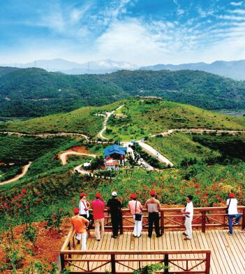

Парк «Дамао Шаньчжай» окружен холмами на горе Дамаошань, которая находится на севере района Сянъань, в 19 км от городского района Тунъань, в 22 км от района Сянъань и в 55 км от острова Сямэнь. Планирование и строительство парка началось в 2014 году. В настоящее время здесь для туристов доступно более 30 видов фруктов и овощей, которые можно собирать. Молодежь или студенческие группы могут также снять весь парк, вместе разжигать костры, запускать фейерверки, петь караоке и т.д., не боясь потревожить других людей.
Адрес: северная часть района Сянъань, гора Дамаошань
Тел: 0592-7979799
Транспорт: на личном транспорте: ①Сянъаньский тоннель – Сянъаньское шоссе - ул. Фаншань Бэйлу – шоссе Синьси - шоссе Синься – ул. Дамаошань ②Кинопарк в районе Тунъань – ул. Усяньлу – в направлении Синьвэй – ул. Синься Дунлу – ул. Дамаошаньлу
 330445074@qq.com
330445074@qq.com 12345
12345